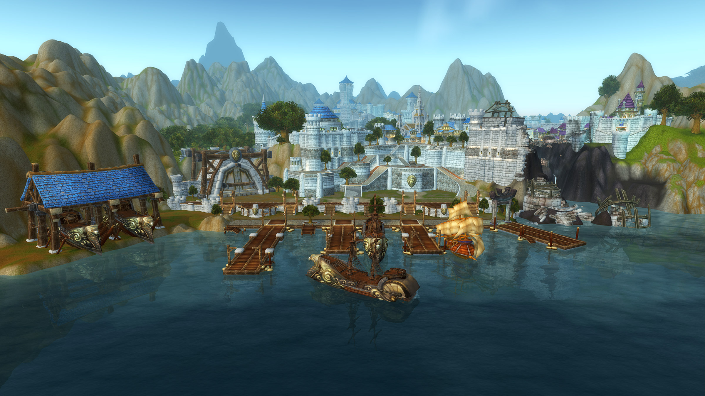
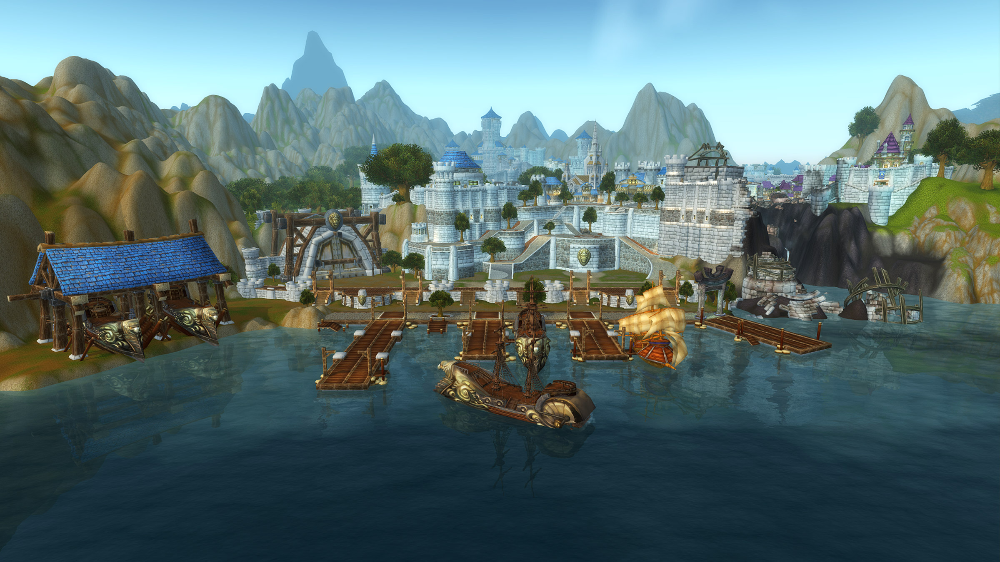

Human
AllianceRecent discoveries have shown that humans are descended from the barbaric vrykul, half-giant warriors who live in Northrend. Early humans were primarily a scattered and tribal people for several millennia, until the rising strength of the troll empire forced their strategic unification. Thus the nation of Arathor was formed, along with its capital, the city-state of Strom
 

Home Zone Elwynn Forest The peaceful woodlands to the south of Stormwind City seem more tranquil than ever since the fall of the Defias Brotherhood, but the inhabitants of Elwynn Forest are hardly idle. There are fields to sow, mines to work, and lumber to harvest. For all its pomp and grandeur, Stormwind wouldn’t last long without a constant stream of food and supplies to support the city’s population. This exchange has become increasingly threatened by kobold invasions, vicious feuds among farmers, and attacks from wild animals. Northshire Abbey remains dedicated to recruiting and training any adventurers brave enough to help keep the peace. Likewise, the Blackrock orcs are gathering their forces in the nearby Redridge Mountains. With Stormwind’s militia stretched thinner than ever, these renegade orcs stand ready to finally annihilate their old human enemies in Elwynn Forest.
Home City Stormwind City No city better demonstrates human determination than Stormwind. Destroyed during the Horde’s initial invasion of Azeroth, Stormwind was painstakingly reconstructed by the Stonemasons’ Guild after the Second War. Parts of the city were razed again when Deathwing, the corrupted black Dragon Aspect, brutally attacked Stormwind, but the other undamaged districts are more beautiful than ever thanks to their hardworking inhabitants. From the magnificent Cathedral of Light, which serves as a major spiritual hub, to the awe-inspiring Valley of Heroes, which commemorates the sacrifices of Stormwind’s loyal champions, the city truly represents the courageous heart of humanity.
- Humans have increased Stealth detection
- Humans Spirit is greater than others
- Humans have bonus reputation gains
- Humans have increased skill with swords and maces
These trusty steeds have carried their human masters to battle since before the First War. Known for their swiftness and spirited temperaments, these mounts are perfectly suited for their heroic riders. The Evendales of Elwynn Forest are especially prized by adventurers for their loyalty and steadiness in the face of danger. Due to their overwhelming popularity, these horses can also be found in Theramore and even the Wetlands.